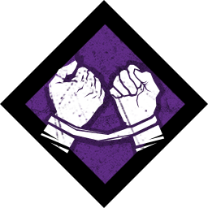
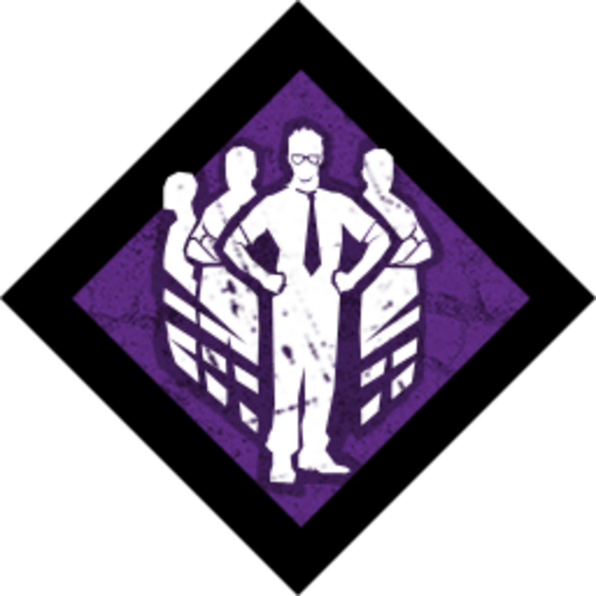
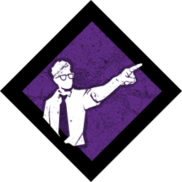
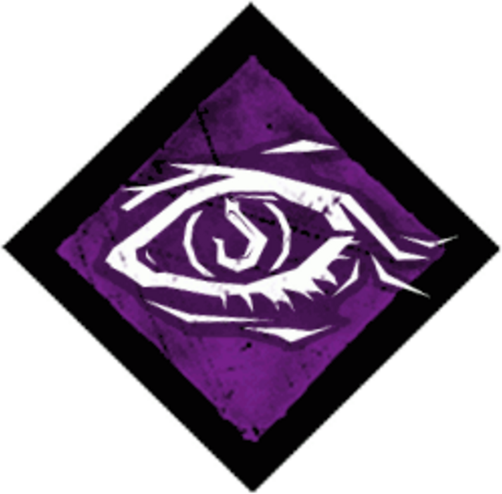
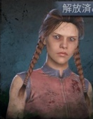
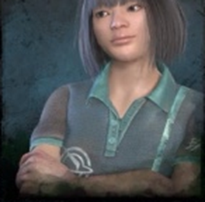
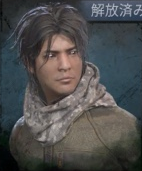
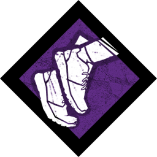
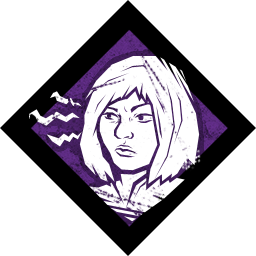
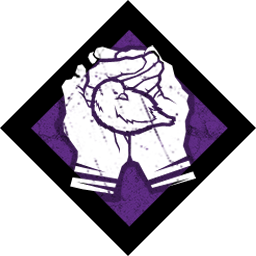

1絆 ドワイトの固有パーク
ドワイトの固有パーク
【効果】
(20・28・36)メートル以内にいる他の仲間のオーラがあなたに視える。
【このパークの目的】
味方全員が何をしているかを想像する癖をつけるため。
DEAD BY DAYLIGHT SURVIVAL GUIDE
できないことは考えるな。0から始める逃亡生活 🦦

1絆
ドワイトの固有パーク
【効果】
(20・28・36)メートル以内にいる他の仲間のオーラがあなたに視える。
【このパークの目的】
味方全員が何をしているかを想像する癖をつけるため。

2有能の証明
ドワイトの固有パーク
【効果】
自分の4メートル以内では、範囲内にいる他の生存者1人につき、 全ての生存者の修理速度が(6・8・10)%上昇する。
【このパークの目的】
ドワイトの固有パークだからすぐ使えるからってだけ。 でも発電機を回す速度が上がるから普通に強いよ。

3リーダー
ドワイトの固有パーク
【効果】
自分の10メートル以内にいる他の生存者は、次の行動速度が(20・25・30)%上昇する。
この効果は、生存者が範囲から出たあと15秒間持続する。
【このパークの目的】
これもドワイトの固有パークだからすぐ使えるからってだけ。 ただ、味方が自分を回復してくれるスピードが上がるから、 味方の足を引っ張るリスクが軽減するよ。
初心者だから足を引っ張るのはしょうがないよ。 だからせめてこれで軽減してあげよう🦦

4血族 共有パーク【効果】
あなたがフックに吊るされているとき、生存者全員にお互いのオーラが視える。 殺人鬼がフックの(14・15・16)メートル以内にいるとき、 殺人鬼のオーラが生存者全員に視える。
自分以外の生存者がフックに吊るされているとき、 他の生存者のオーラがあなたに視える。 殺人鬼がフックに吊るされた生存者の(14・15・16)メートル以内にいるとき、 殺人鬼のオーラがあなたに視える。
【このパークの目的】
これは初めから全キャラ共通で解放されてるパークだから入れてるよ。 でも自分が使っても味方からしてもこれを入れてるとすごくありがたいパークなんだ。
これがあると味方が吊られた後にキラーの動向を確認してから、 安全に動きやすくなるよ。 逆に自分が吊られた場合は、味方にその効果がつくんだよ。 とっても助かるよね🦦



BP（ブラッドポイント）が100万ポイント貯まるまでは、 しばらくこの構成を使っていくよ。
BPが100万溜まったら次はメグ、その次はフェンミン、その次はジェイクの順番に解放するよ。 解放したら使いたいキャラクターに、次に説明していくパークを一個ずつ装備させよう🦦
ドワイト、メグ、フェンミン、ジェイクを解放した人は、 このパーク構成にするよ。
ドワイトの固有パーク
【効果】
(20・28・36)メートル以内にいる他の仲間のオーラがあなたに視える。
【このパークの目的】
これを使えば味方が近くでチェイスしてる、発電してる、セルフケアしてるが一目瞭然だよ。 その都度判断して行動しよう🦦
【注意点】
味方が発電機を回しているから一緒に回そう、回復してるから手伝ってあげよう等の行動は まとめて襲われるリスクになったり、通電までが遅くなる原因になり得るから注意だよ。 基本的に味方とは離れて行動することが大事🦦

2全力疾走 メグの固有パーク【効果】
あなたは走り出すと、迅速50%を2秒間得る。
その後、(60・50・40)秒間疲労状態になる。
【このパークの目的】
自分が発電機を回している時にキラーが向かってきたら逃げるために使うよ。 それ以外のために使うことはほとんどないと思って良いよ。 大丈夫、その使い方が強いんだ🦦
【注意点】
疲労になることを避けて歩き移動する必要はないよ。 発電機を回している間に疲労は回復するから。 今回はあくまでキラーが来たときに発電機から素早く離れるためのパークという認識でいよう🦦

3警戒 フェンミンの固有パーク【効果】
殺人鬼が破壊可能な壁やパレットを破壊するか、発電機にダメージを与えたとき：
【このパークの目的】
キラーが発電機を破壊した時にすぐに分かるよ。 発電機を壊されたということは味方が既に回していたということ。 だから自分の手が空いてるならできるだけその発電機を引き継いであげよう。 それしてくれるとすごい助かるなあ🦦
【注意点】
キラーから安全に隠れるため、自分の生存率を上げるために使うわけじゃないよ。 ビクビクして隠密ばっかりするような立ち回りにはならないように気をつけよう🦦

4魂の平穏 ジェイクの固有パーク【効果】
あなたはカラスを怖がらせず、叫び声を上げない。
チェストを開錠する音やトーテムを浄化または清める音がしなくなり、 その速度が(8・9・10)%上昇する。
【このパークの目的】
叫び声を上げないからキラーに場所を特定するリスクを減らすことができるよ。 まあ正直言うと初期から使えるキャラで、ラッコが色々考えた結果 消去法でこのパークが無難だなと思ったから選んだって感じ。
全然変えても良いけど、セルフケアとかオポチュニティとか、 強力なパークを入れてないということにはそれなりの理由があるんだけど、 長くなるから楽しみ方のところで説明するね🦦
【注意点】
キラー側が叫ばせるパークを使ってなかったら完全に腐るパークってとこくらい。 でも逆に言えばキラーが叫ばせるパークを使っているなら、 そのパークを腐らせることができるからね。 ラッコはけっこう好きだよ🦦
プレイ時間が100時間未満の人はこれでやっていくよ。 使い方は立ち回りのところで説明するよ🦦